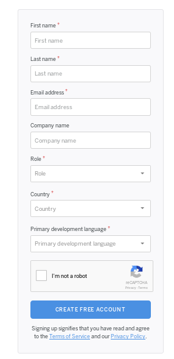

🚀 Mandando um foguete para o espaço

Hora do deploy
Neste passo iremos colocar no ar a aplicação utilizando a plataforma heroku.
A heroku é uma plataforma de nuvem como serviço, suportando várias linguagens de programação que é utilizada como modelo de implementação de aplicativos web.
Em termos simples, a plataforma recebe a sua base de código, identifica a linguagem de programação e ferramentas utilizadas e coloca no ar sua aplicação, sem precisar se preocupar com configuração complexa de infraestrutura.
Quando utilizamos o termo deploy, estamos falando da implementação da nossa aplicação web, ou seja, colocar a nossa aplicação no ar.
Primeiro passo para fazermos deploy da versão atual do nosso software é se registrar na plataforma.
É uma plataforma grátis para aplicativos de pequeno porte e uma opção também para aplicativos maiores.
Acesse https://signup.heroku.com/ e preencha o formulário.

Em um terminal faça login em sua conta recém criada através do comando heroku login.
Crie uma aplicação no Heroku, preparando a heroku para receber seu código-fonte.
$ heroku create
Creating app... done, ⬢ agile-river-58363
https://agile-river-58363.herokuapp.com/ | https://git.heroku.com/agile-river-58363.git
Com este comando um repositório remoto é vinculado ao seu repositório local e cada vez que quiser modificar a versão do código rodando, basta enviar seu código para este repositório remoto. Esta ação desencadeia toda uma nova implementação da sua aplicação.
Antes de enviar pela primeira vez nosso código, vamos fazer as últimas configurações necessárias.
O Heroku utiliza um arquivo chamado Procfile que contém informações de como rodar sua aplicação. Crie este arquivo com o seguinte conteúdo.
web: uvicorn --host=0.0.0.0 --port=$PORT gerenciador_tarefas.gerenciador:app
Salve a versão atual da nossa aplicação para implantação.
$ git add Procfile
$ git commit -m "implantação no heroku"
Agora vamos a implantação do sistema.
É simples como git push heroku master.
$ git push heroku master
Enumerating objects: 5, done.
Counting objects: 100% (5/5), done.
Delta compression using up to 4 threads
Compressing objects: 100% (2/2), done.
Writing objects: 100% (3/3), 303 bytes | 303.00 KiB/s, done.
Total 3 (delta 1), reused 0 (delta 0)
remote: Compressing source files... done.
remote: Building source:
remote:
remote: -----> Python app detected
remote: -----> Installing requirements with pip
...
remote: Procfile declares types -> web
remote:
remote: -----> Compressing...
remote: Done: 55.6M
remote: -----> Launching...
remote: Released v4
remote: https://agile-river-58363.herokuapp.com/ deployed to Heroku
remote:
remote: Verifying deploy... done.
To https://git.heroku.com/agile-river-58363.git
629aed8..8710ff8 master -> master
 No momento em que este tutorial foi escrito, por padrão, o python onde será colocado nossa aplicação no ar é a 3.6, caso queira alterar será necessário adicionar um arquivo
No momento em que este tutorial foi escrito, por padrão, o python onde será colocado nossa aplicação no ar é a 3.6, caso queira alterar será necessário adicionar um arquivo runtine.txt com a versão como conteúdo, por exemplo, python-3.8.1. Não esqueça de versionar este novo arquivo.
Deu certo?
Para verificarmos se a implantação deu certo, digite heroku open e lembre-se que o recurso está em /tarefas ou copie a url retornada no comando de implantação acrescentando /tarefas e utilize o httpie para testar assim como foi feito localmente.
No nosso exemplo seria http https://agile-river-58363.herokuapp.com/tarefas.
Verifique se uma resposta 200 OK foi obtida.
:trollface: Acabou, é isso pessoal! Já temos uma aplicação no ar e podemos ir embora.
Brincadeira, foi legal ter a nossa primeira versão da aplicação no ar, mas agora precisamos evoluí-la.